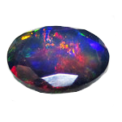
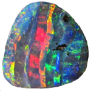
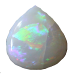

Ores & Minerals of Australia
Mineral Ore Mines
Australia's Mines
___________________________________________________Australia has over 1000 mines located across the states, however less than half of them are currently active. Western Australia currenly has the largest amount of active mines, and is the largest contributor of iron ore exports.
___________________________________________________Opals
Australia's National Gemstone
___________________________________________________Opal or the fire of the desert as known to the Indigenous people, was proclaimed as Australia's national gemstone on 23 July 1993. Australia's Opal fields alone are larger than the rest of the world's Opal fields combined.
  There are 3 main forms of opals that are found in Australia as seen above from the order of left to right: Black Opals, Boulder Opals and White or Milky opals. Of the three, Black Opals is the most valuable and is and is mainly mined from Lighting Ridge
___________________________________________________
Australia is the only place in the world where opalised animal and plant fossils can be found. This is because the combination of pH and other chemical conditions required for opal formation is extremely specific. Australia used to be covered by a vast insland sea some 20 million years ago until it subsided, leaving behind soluble silicia that permeated the bagin which gave rise to opal formation.